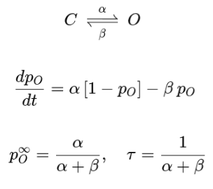
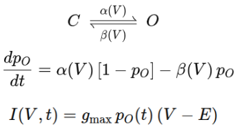
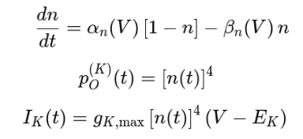
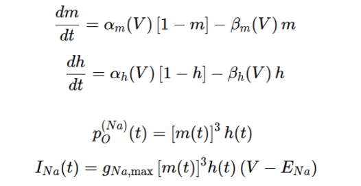

Stochastic Channel Simulation
Part 1: Simple Gating with Constant Rates
Alpha (Opening Rate)
0.01
Beta (Closing Rate)
0.02
Number of Channels
10
Simulation Duration (ms)
200

Part 2: Single Voltage-Dependent Gate
Membrane Voltage (mV)
-20
Number of Channels
1
Simulation Duration (ms)
100

Part 3: Full Potassium (K+) Channel
Membrane Voltage (mV)
-20
Number of Channels
5
Simulation Duration (ms)
200

Part 4: Full Sodium (Na+) Channel
Membrane Voltage (mV)
-20
Number of Channels
5
Simulation Duration (ms)
100
